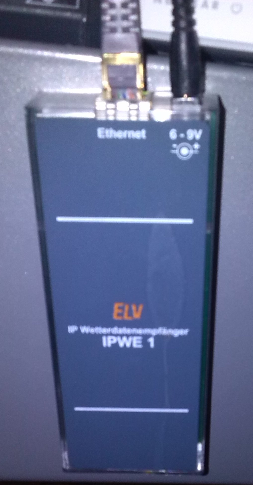

class: center, middle

# A minimalist heat monitor using Ruby
---
background-image: url(images/9-heater.jpg)
---
class: center, middle

---
class: center, middle

---
class: center, middle

---
background-image: url(images/1-elv.png)
---
background-image: url(images/5-3D.png)
---
background-image: url(images/2-select-element.png)
---
background-image: url(images/3-get-selector.png)
---
[Copy X-Path] gives us a unique CSS-Selektor

```body > form > table > tbody > tr:nth-child(2) > td:nth-child(4)```

---
background-image: url(images/12-zabbix-start.png)
---
Backup server

...in the same room

...was monitored by Zabbix anywhere.

Zabbix Agent configuration:

```bash
# ...
# I am part of /etc/zabbix/zabbix_agentd.conf

UserParameter=custom.vorzimmer,/var/scripts/vorzimmer
UserParameter=custom.abstellraum,/var/scripts/abstellraum
```
---
A bash Wrapper, since after the last upgrade rvm knifed me

```bash
#! /bin/bash
# I am /var/scripts/vorzimmer

# Kick rvm to be available
export PATH="$PATH:$HOME/.rvm/bin"
source /home/stefan/.rvm/scripts/rvm

ruby /var/scripts/vorzimmer.rb
```
---
The actual Ruby script

```ruby
# Hi, I'm: /var/scripts/vorzimmer.rb
require 'nokogiri'
require 'open-uri'

# Get the webinterface content...
html_content = open("http://10.0.0.202/ipwe.cgi",
                    :http_basic_authentication => ["%USERNAME%", "%PASSWORD%"])

# Use Nokogiri for parsing...
doc = Nokogiri::HTML(html_content)

# ... the XSS Path - you remember it?
# body > form > table > tbody > tr:nth-child(2) > td:nth-child(4)
temperature = doc.css("html body form table tbody tr:nth-child(2) td:nth-child(4)")
                 .text[/[0-9\.]+/]

# return the temperature to Zabbix agent
puts temperature
```
---
background-image: url(images/10-zabbix.png)
---
background-image: url("images/11-wireless-troubles.png")
---
class: center, middle


Zabbix is then configured to send a notification E-mail if
temperatures fall below certain thresholds.

That's it!

Find this presentation at:

http://at.mittenin.at/39

mailto:`stefan@informatom.com`

twitter: `@informatom`